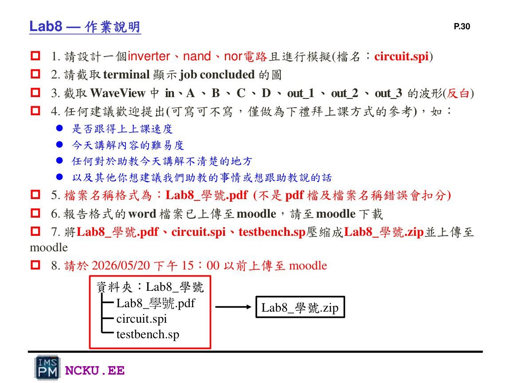

Lab8 報告內容與繳交版本
這一頁整理 Lab8 報告應該放什麼、截圖怎麼安排、最後 ZIP 怎麼產生。
一、報告內容建議
封面與基本資料
填寫學號、姓名、作業名稱。檔名建議：Lab8_學號.pdf。
Inverter
放 inverter 的 HSPICE 電路描述或電路圖、terminal job concluded 截圖、WaveView 中 in 與 out_1 波形。
NAND
放 NAND 電路圖或 netlist、terminal job concluded 截圖、WaveView 中 A、B、out_2 波形。
NOR
放 NOR 電路圖或 netlist、terminal job concluded 截圖、WaveView 中 C、D、out_3 波形。
結論 / 心得
可寫 HSPICE netlist 與測試檔分工、PULSE 設定、WaveView 波形是否符合真值表。
二、可直接放進報告的文字
實驗目的
本次 Lab8 主要目的為學習使用 HSPICE 建立 CMOS 基本邏輯閘之 transistor-level netlist，包含 inverter、NAND 與 NOR。透過 testbench 設定 VDD、GND 與 PULSE 輸入訊號，進行 transient analysis，並使用 WaveView 觀察輸入輸出波形，確認電路功能符合邏輯真值表。
結果說明
由模擬波形可確認 inverter 的輸出與輸入相反；NAND 在兩個輸入皆為高電位時輸出為低電位，其餘情況為高電位；NOR 則只有在兩個輸入皆為低電位時輸出為高電位。三個電路皆符合 CMOS 邏輯閘預期功能。
三、繳交檔案

Lab8 講義列出的最後繳交要求：PDF、circuit.spi、testbench.sp 壓成 ZIP。
Lab8_學號/ ├── Lab8_學號.pdf ├── circuit.spi └── testbench.sp zip -r Lab8_學號.zip Lab8_學號